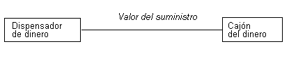
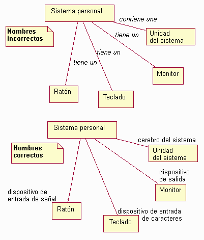
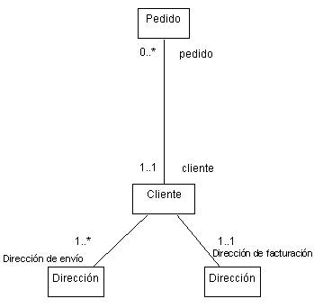
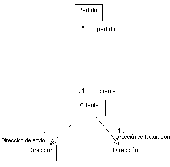
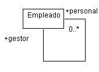
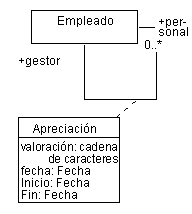
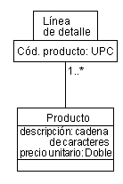

| Directriz: Asociación |
 |
|
| Elementos relacionados |
|---|
AsociacionesLas asociaciones representan relaciones estructurales entre objetos de diferentes clases; representan conexiones entre instancias de dos o más clases que existen para una cierta duración. Compare esto con los enlaces transitorios que, por ejemplo, existen sólo para la duración de una operación. Estas últimas situaciones se pueden modelar, en cambio, mediante colaboraciones, en que los enlaces existen sólo en contextos limitados particulares. Puede utilizar asociaciones para mostrar que los objetos saben de los otros objetos. A veces, los objetos deben mantener las referencias entre ellos para poder interactuar, por ejemplo, para enviarse mensajes; por lo tanto, en algunos casos las asociaciones pueden seguir los patrones de interacción de diagramas de secuencia o diagramas de comunicación. Nombres de asociaciónLa mayoría de asociaciones son binarias (existen exactamente entre dos clases) y se dibujan como vías de acceso sólidas que conectan parejas de símbolos de clase. Una asociación puede tener un nombre o los roles de la asociación pueden tener nombres. Los nombres de rol son preferibles, ya que comunican más información. En los casos en que sólo se puede nombrar uno de los roles, los roles siguen siendo preferibles a los nombres de asociación siempre que la asociación se espere que sea unidireccional, empezando en el objeto al que se asocia el nombre de rol. Las asociaciones se suelen denominar durante el análisis, antes de que exista información suficiente para denominar adecuadamente los roles. Cuando se utilicen, los nombres de asociación deben reflejar el objetivo de la relación y ser una frase verbal. El nombre de la asociación se coloca en, o junto a, la vía de acceso de la asociación. Ejemplo En un cajero automático, Cajón del dinero facilita el dinero que dispensa el Dispensador de dinero. Para que el Dispensador de dinero pueda dispensar dinero, debe mantener una referencia al objeto Cajón del dinero; del mismo modo, si el Cajón del dinero queda vacío, el objeto Dispensador de dinero debe recibir una notificación, para que el Cajón del dinero mantenga una referencia al Dispensador de dinero. Una asociación modela esta referencia.  Una asociación entre el Dispensador de dinero y el Cajón del dinero, denominada Valor del suministro. Los nombres de asociación, si se eligen mal, pueden resultar confusos y engañosos. El ejemplo siguiente ilustra nombres correctos e incorrectos. En el primer diagrama, se utilizan los nombres de asociación, y si son sintácticamente correctos (utilizando frases verbales), no comunican demasiada información sobre la relación. En el segundo diagrama, se utilizan los nombres de rol, que comunican mucho más sobre la naturaleza de la participación en la asociación.  Ejemplos de uso correcto e incorrecto de los nombres de asociación y de rol RolesCada extremo de una asociación es un rol que especifica la cara que juega una clase en la asociación. Cada rol debe tener un nombre, y los nombres de rol opuestos a una clase deben ser únicos. El nombre de rol debe ser un nombre que indique el rol de los objetos asociados en relación con el objeto al que se asocian. Un nombre de rol adecuado para Maestro en una asociación con una Sección de curso sería, por ejemplo, profesor; evite nombres como "tiene" y "contiene", ya que no añaden información sobre las relaciones que existen entre las clases. Tenga en cuenta que el uso de nombres de asociación y de nombres de rol es mutuamente exclusivo: uno no utilizaría un nombre de asociación y un nombre de rol. Los nombres de rol son preferibles a los nombres de asociación excepto en los casos en que no existe información suficiente para nombrar el rol adecuadamente (como suele ocurrir en el análisis; en nombres de rol de diseño siempre se debe utilizar). La falta de un buen nombre de rol sugiere un modelo incompleto o mal formado. El nombre de rol se coloca junto al final de la línea de asociación. Ejemplo Imagine la relación entre clases en un sistema de entrada de pedidos. Un Cliente puede tener dos tipos de dirección diferentes: una dirección a la que se envían las facturas, y una serie de direcciones a las que se pueden enviar los pedidos. Como resultado, tenemos dos asociaciones entre Cliente y Dirección, tal como se muestra a continuación. Las asociaciones están etiquetadas con el rol que juega la dirección asociada para el Cliente.  Las asociaciones entre Cliente, Dirección y Pedido muestran los nombres de rol y las multiplicidades MultiplicidadPara cada rol puede especificar la multiplicidad de esta clase, cuántos objetos de la clase se pueden asociar con un objeto de otra clase. La multiplicidad se indica con una expresión de texto en el rol. La expresión es una lista de rangos enteros separados por comas. Un rango se indica con un entero (el valor más bajo), dos puntos y un entero (el valor más alto); un único entero es un rango válido, y el símbolo '*' indica "muchos", es decir, un número de objetos ilimitado. El símbolo '*' por si mismo equivale a '0..*', es decir, cualquier número que incluya none; el valor por omisión. Un rol escalar opcional tiene la multiplicidad 0..1. Ejemplo En el ejemplo anterior, las multiplicidades se mostraban para las asociaciones entre Pedido y Cliente, y entre Cliente y Dirección. En la interpretación del diagrama, se indica que un Pedido debe tener un Cliente asociado (la multiplicidad es 1..1 en el extremo Cliente), pero un Cliente puede no tener Pedidos (la multiplicidad es 0..* en el extremo Pedido). Además, un Cliente tiene una dirección de facturación, pero tiene una o más direcciones de envío. Para reducir el desorden de notación, si se omiten las multiplicidades, se puede asumir que son 1..1. NavegabilidadLa propiedad de navegabilidad en un rol indica que es posible navegar de una clase asociada a la clase de destino mediante la asociación. Esto se puede implementar de diferentes modos: por referencias directas de objeto, por matrices asociativas, tablas hash o cualquier otra técnica de implementación que permita que un objeto haga referencia a otro. La navegabilidad se indica con una flecha abierta, que se coloca en el extremo de destino de la línea de asociación junto a la clase de destino (a la que se navega). El valor por omisión de la propiedad de navegabilidad es true. Ejemplo En el ejemplo de entrada de orden, la asociación entre el Pedido y el Cliente es navegable en ambas direcciones: un Pedido debe saber qué Cliente ha hecho el Pedido y el Cliente debe saber qué Pedidos ha hecho. Cuando no se muestran puntas de flecha, la asociación es navegable en ambas direcciones. En el caso de asociaciones entre Clientes y Direcciones, el Cliente debe saber sus Direcciones, pero las Direcciones no tienen conocimiento de qué Clientes (u otras clases, ya que muchas cosas tienen dirección) están asociados con la dirección. Como resultado, la propiedad de navegabilidad del extremo Cliente de la asociación se desactiva, resultando en el diagrama siguiente:  Las clases del Sistema de entrada de pedido actualizadas, que muestran la navegabilidad de las asociaciones. AutoasociacionesA veces, una clase se puede asociar a si misma. Esto no significa necesariamente que una instancia de esa clase tenga una asociación consigo misma; suele significar que una instancia de la clase tiene asociaciones a otras instancias de la misma clase. En el caso de las autoasociaciones, los nombres de rol son esenciales para distinguir el objetivo de la asociación. Ejemplo Considere la autoasociación siguiente que implica la clase Empleado:  En este caso, un empleado puede tener una asociación con otros empleados; si la tiene, es un gestor, y los otros empleados son miembros de su personal. La asociación es navegable en ambas direcciones ya que los empleados conocerán a su gestor, y un gestor conoce a su personal. Asociaciones múltiplesDibujar dos asociaciones entre clases significa que los objetos se relacionan dos veces; un objeto determinado puede estar enlazado con diferentes objetos a través de cada asociación. Cada asociación es independiente y se distingue con el nombre de rol. Como se ha mostrado anteriormente, un Cliente puede tener asociaciones con diferentes instancias de la misma clase, cada uno con nombres de rol diferentes. Ordenación de rolesCuando la multiplicidad de una asociación es superior a uno, las instancias asociadas se pueden ordenar. La propiedad ordenada en un rol indica que las instancias que participan en la asociación se han pedido; por omisión, son un conjunto no ordenado. El modelo no especifica cómo debe mantenerse el orden; las operaciones que actualizan una asociación ordenada deben especificar donde se insertan los elementos actualizados. EnlacesLas instancias individuales de una asociación se denominan enlaces; un enlace es, por lo tanto, una relación entre instancias. Los mensajes se pueden enviar en enlaces, y los enlaces pueden denotar referencias y agregaciones entre objetos. Consulte el apartado Technique: Communication Diagram para obtener más información. Clases de asociaciónUna clase de asociación es una asociación que también tiene propiedades de clase (como atributos, operaciones y asociaciones). Se muestra dibujando una línea de guiones de la vía de acceso de asociación a un símbolo de clase que mantiene los atributos, operaciones y asociaciones para asociación. Los atributos, operaciones y asociaciones se aplican a la misma asociación original. Cada enlace de la asociación tiene las propiedades indicadas. El uso más común de las clases de asociación es la reconciliación de relaciones de muchos a muchos (vea el ejemplo siguiente). En principio, el nombre de la asociación y la clase deberían ser el mismo, pero se permiten nombres diferentes si fuera necesario. Una clase de asociación dañada sólo contiene atributos para la asociación; en este caso, puede omitir el nombre de clase de asociación para quitar énfasis a la separación. Ejemplo Ampliando el ejemplo de Empleados anterior, imagine el caso de un Empleado (una persona de la plantilla) que trabaja para otro Empleado (un gestor). El gestor realiza una valoración periódica del miembro del personal, reflejando su rendimiento sobre un periodo de tiempo especificado. La apreciación no puede ser un atributo del gestor o del miembro del personal por si sólo, sino que podemos asociar la información con la misma asociación, tal como se muestra a continuación:  La clase de asociación Apreciación captura información relacionada con la misma asociación Asociaciones calificadasLos calificadores se utilizan para restringir y definir el conjunto de instancias que se asocian a otra instancia; un objeto y un valor de calificador identifican un conjunto único de objetos a través de la asociación, formando una clave compuesta. La calificación habitualmente reduce la multiplicidad del rol opuesto: la multiplicidad neta muestra el número de instancias de la clase relacionada asociada con la primera clase y un valor de calificador determinado. Los calificadores se dibujan como recuadros pequeños en el extremo de la asociación conectada con la clase calificadora. Forman parte de la asociación, no de la clase. Un recuadro calificador puede contener múltiples valores calificadores; la calificación se basa en la lista completa de valores. Una asociación calificada es una variante de un atributo de asociación. Ejemplo Imagine el perfeccionamiento siguiente de la asociación entre Elemento de línea y Producto: un Elemento de línea tiene una asociación con el Producto que se solicita. Cada Elemento de línea hace referencia a un único Producto, mientras que un Producto puede solicitarse en muchos Elementos de línea. Calificando la asociación con el calificador Código de producto, indicamos, adicionalmente, que cada producto tiene un único código de producto y que los Elementos de línea se asocian con Productos utilizando este código de producto.  La asociación entre Elementos de línea y Producto tiene el calificador Código de producto. Asociaciones n-ariaUna asociación n-aria es una asociación entre tres o más clases, donde una única clase puede aparecer más de una vez. Las asociaciones n-arias se dibujan como grandes diamantes con una vía de acceso de asociación a cada clase participante. Este es el símbolo del modelo de entidad-relación tradicional de una asociación. Esta forma binaria se dibuja sin el diamante para obtener una mayor solidez, ya que son la mayoría de las asociaciones en un modelo real. Las asociaciones n-arias son poco comunes y también se pueden modelar promoviéndolas a clases. Las asociaciones n-arias también pueden tener una clase de asociación; esto se muestra dibujando una línea de guiones desde el diamante hasta el símbolo de clase. Los roles pueden tener nombres de rol pero la multiplicidad es más complicada y se especifica mejor listando las claves candidatas. Si se diera, la multiplicidad representa el número de instancias correspondiente a un tuple determinado de otros objetos N-1. La mayoría de utilizaciones de asociaciones n-arias se puede eliminar utilizando asociaciones calificadas o clases de asociación. También pueden reemplazarse con clases corrientes, aunque esto pierde la restricción que sólo se puede producir un enlace para un tuple determinado de objetos participantes. |
© Copyright IBM Corp. 1987, 2006. Reservados todos los derechos. |